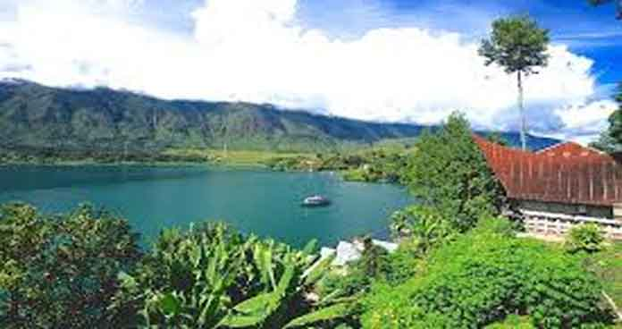

Desa Meat

Untuk menuju ke desa ini, jaraknya tak terlalu jauh dari Bandara Internasional Sisimangaraja XII atau Bandara Silangit yang kini tengah diproyeksikan menjadi tempat masuk dan keluar wisatawan yang ingin mengunjungi Danau Toba, yaitu hanya 31 menit. Jalur yang kami lewati untuk menuju desa ini bisa dikatakan cukup kecil, namun mobil Toyota Hiace yang kami tumpangi bisa masuk dan lewat di jalan kecil tersebut. Sebelum masuk ke kawasan desa yang dijuluki death valley viewing spot ini, kami disuguhkan oleh hamparan sawah hijau yang membuat mata terbelalak dibuatnya.